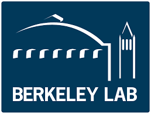
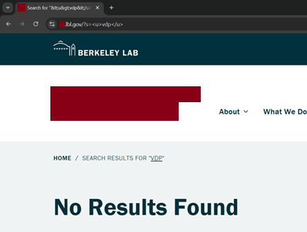
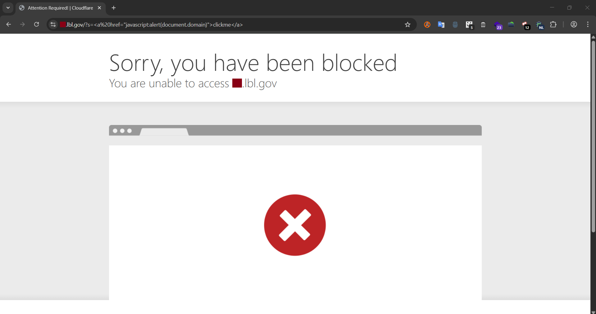
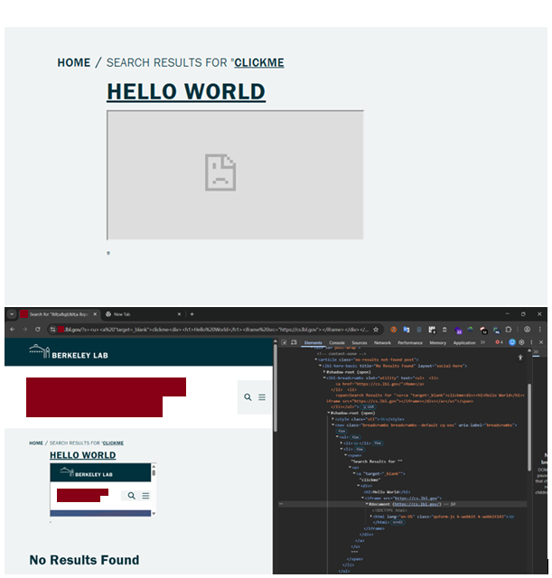
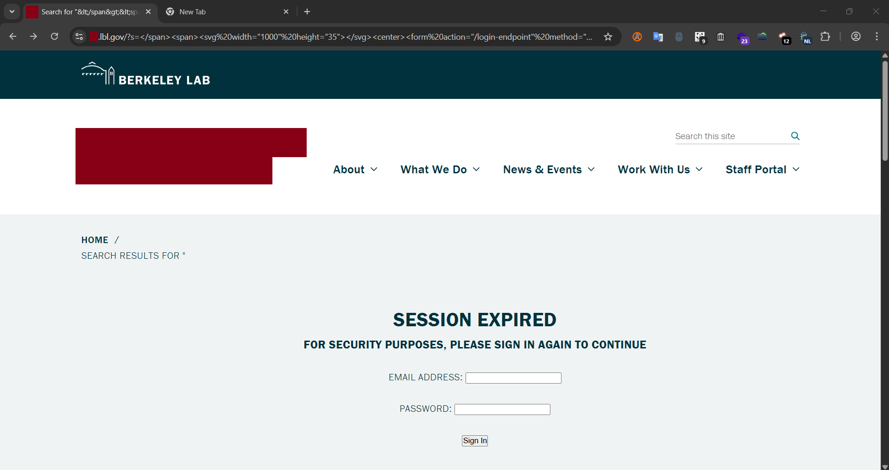
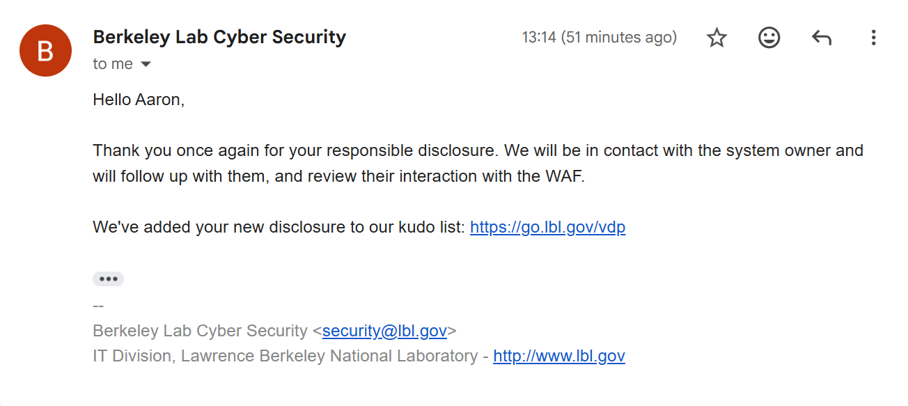

“If you already scored a valid submission in a VDP, why would you hunt for security flaws again?” The answer is simple. I want to make sure my wins are not the result of luck, but of skill.
This story is a continuation of my previous write-up about my first valid submission in Lawrence Berkeley National Laboratory’s (LBNL) Vulnerability Disclosure Program.
As a quick recap, LBNL’s VDP is their implementation of the US Department of Energy’s Vulnerability Disclosure Program. Essentially, anyone from any country is allowed to hunt for security flaws on their public-facing systems and disclose them responsibly, as long as the program rules are followed. Doing so provides legal safe harbor and helps ensure that researchers are not prosecuted under the Computer Fraud and Abuse Act (CFAA). It sounds intimidating at first, almost as if the FBI is watching your every move, but over time, you get used to it.
In my previous story, I mentioned my rather simple methodology. I enumerate subdomains and manually test each one. I am fully aware that this approach is inefficient compared to automation. However, I have terrible luck with automated tools in Kali Linux, and I have also found that poorly configured automation tends to trigger WAFs and alert the target’s Security Operations Center far more easily.
Over the weekend, I continued manually going through the remaining LBNL subdomains, all while listening to Final Fantasy soundtracks in the background. One of life’s most underrated luxuries is not having to rush against deadlines, simply enjoying music and casually browsing the internet, in this case, US Government systems. Due to the VDP scope restrictions, I estimated that around 70 percent of the sites were dead ends and not worth pushing further.
After bookmarking many potential targets, I eventually reached roughly the 446th subdomain. At first glance, it was a typical LBNL website with standard sections such as About, What We Do, and News & Events. Nothing immediately stood out as a promising attack surface, except for one feature, the search function.
When testing for potential HTML injection or XSS vulnerabilities, I tend to avoid using the <b> element. Before other hackers grab their pitchforks, let me explain. With modern CSS frameworks, typography styles, and headings, <b> is often unreliable as a visual indicator. It is easy to confuse injected output with existing styles. Instead, I prefer using its cousin, the <u> element. It is simple, unambiguous, and if HTML injection succeeds, the underline is immediately visible.

The result was clear. HTML injection was working.

Naturally, I decided to explore further by testing what was allowed and what was blocked. After approximately three hours of testing, repeatedly triggering Cloudflare’s WAF, and inspecting responses using browser Developer Tools, I arrived at several conclusions. The following HTML elements were allowed: <svg>, <iframe>, <a>, <h1>, <div>, <u>, <img> and <textarea>. Anything related to JavaScript, however, was blocked by Cloudflare’s WAF. This included <script>, <noscript>, <alert>, <onclick>, <button>, javascript:, inline styles, document.write(), and the onload event.

While experimenting further, I discovered that <iframe> blocked embedding google.com, but allowed sources under lbl.gov. This behavior suggested that iframe restrictions were enforced through X-Frame-Options: SAMEORIGIN and/or a Content Security Policy frame-ancestors directive. At this point, it was almost lunchtime, and attempting to bypass Cloudflare’s WAF through payload obfuscation to achieve reflected XSS did not seem worth the energy-to-reward ratio. As a result, I shifted my focus toward weaponizing the HTML injection as a phishing vector instead.
I spent more time crafting a phishing-style HTML sign-in form. The main challenge was that CSS was blocked, which forced me to rely purely on HTML for layout and presentation. After many iterations and reusing what I had learned from previous tests, I arrived at a final payload.
https://redacted.lbl.gov/?s=%3C/span%3E%3Cspan%3E%3Csvg%20width=%221000%22%20height=%2235%22%3E%3C/svg%3E%3Ccenter%3E%3Cform%20action=%22/login-endpoint%22%20method=%22POST%22%20class=%22form-example%22%3E%3Cbr%3E%3Cbr%3E%3Ch1%3ESession%20Expired%3C/h1%3E%20%3Ch3%3EFor%20security%20purposes,%20please%20sign%20in%20again%20to%20continue%3C/h3%3E%3Cbr/%3E%3Cdiv%20class=%22form-example%22%3E%3Clabel%20for=%22email%22%3EEmail%20address:%3C/label%3E%20%3Cinput%20type=%22email%22%20name=%22email%22%20id=%22email%22%20required%20/%3E%3Cbr%3E%3C/div%3E%3Cbr/%3E%3Cdiv%20class=%22form-example%22%3E%3Clabel%20for=%22password%22%3EPassword:%3C/label%3E%20%3Cinput%20type=%22password%22%20name=%22password%22%20id=%22password%22%20required%20/%3E%3Cbr%3E%3C/div%3E%3Cbr%3E%3Cdiv%20class=%22form-example%22%3E%3Cinput%20type=%22submit%22%20value=%22Sign%20In%22%20/%3E%3C/div%3E%3Csvg%20width=%221000%22%20height=%221000%22%3E%3C/svg%3E%3C/form%3E%3C/center%3EAll of that code, combined with careful UI positioning, resulted in a phishing page that looked convincing enough for users who do not inspect page source code or the complete URL.

Once again, I drafted a detailed email to the Berkeley Lab Cybersecurity team, clearly explaining my methodology, findings, and the specific behaviors enforced by Cloudflare’s WAF.
About an hour later, I received a reply from their cybersecurity team. They thanked me for the responsible disclosure and informed me that my name had once again been added to the White Hats for Science Kudos list.

Another win right before Christmas? I will gladly take that. While I did not manage to trigger an XSS vulnerability this time, it still felt like a solid validation of my approach. Otherwise, it might have been a Merry XSSMas instead of the usual Merry Xmas.
See you in the next hack.
@aaronamran
December 2025